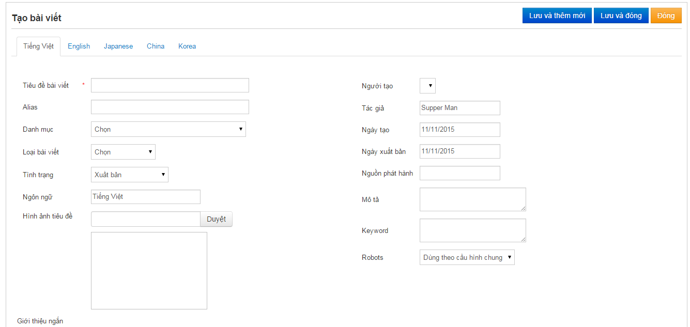

II. Quản lý Bài viết
1. Tạo mới bài viết
-
Vào menu D. Nội dung -> 1.Quản lý bài viết -> Thêm mới
-
Trong màn hình viết bài mới chỉ cần nhập các thông tin: Tiêu đề, Thể loại, Hình ảnh tiêu đề, giới thiệu ngắn và nội dung bài viết.
o Thể loại chính là danh sách các danh mục mà ta đã tạo ở phần trước, phần Alias cũng tương tự như phần danh mục, chỉ khi nào chương trình báo Alias đã tồn tại thì mới gỗ thêm vô.
o Hình ảnh tiêu đề là hình hình ảnh xuất hiện khi ta muốn thể hiện 1 danh sách các bài viết ra ngoài trang web thì hình ảnh tiêu đề này sẽ xuất hiện cùng với phần giới thiệu ngắn
-
Các phần khác để nguyên.
-
Nếu có nội dung Tiếng Anh thì qua Tab Tiếng Anh nhập nội dung Tiếng Anh và làm tương tự như Tiếng Việt
-
Bấm nút “Lưu và thêm mới” hoặc “Lưu và đóng ” để lưu nội dung vừa nhập.

(Chú ý: Hình ảnh tiêu đề nên chọn hình hình không quá nặng và phải gần đúng hoặc tốt nhất là đúng theo tỉ lệ 4:3 (Ví dụ : 400x300) thì hiển thì danh sách bài viết sẽ hiển thị đẹp hơn. Phần hình ảnh tiêu đề và Giới thiệu ngắn sẽ không được xuất hiện bên trong nội dung chính bài viết mà chỉ xuất hiện ở phần danh sách bài viết.)
2. Sửa bài viết
-
Vào menu Nội dung -> Quản lý bài viết
-
Chọn bài viết cần sửa, bấm vào nút Sửa để mở màn hình sửa nội dung và chỉnh sửa tương tự như lúc thêm bài viết mới
-
Chỉnh sửa nội dung cần thiết, bấm Lưu để lưu nội dung vừa sửa.
3. Không hiển thị bài viết, xoá bài viết
-
Chọn Nội dung => Quản lý bài viết =>bấm nút Xóa để xoá bài viết.
-
Để không hiển thị một bài viết thì chọn vào Sửa bài viết và chọn Tình trạng là : Chưa được công bố để không hiển thị một bài viết nào đó.